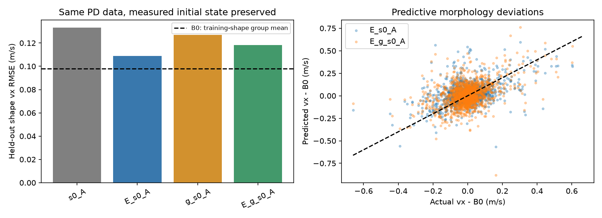

[사실] 사전 기준 미달. 실제 초기 상태와 정답 궤적을 보존하고 입력 표현만 변경했음.
안 본 형상 4-fold (= 16형상을 4개씩 빼고 학습), seed 3개 평균. s0=실제 초기 상태, A=관절 목표각 행동 열, E=형상 좌표, g=home 자세에서 1초 안착한 상태. B0=같은 모션·시작 그룹의 학습 형상 평균.
사전 기준: E_g_s0_A 속도 오차가 B0보다 20% 이상 감소, 형상 효과 부호 80% 이상 일치, E_s0_A보다 오차 감소. 기존 실험의 다른 판정 기준은 이 실험에 소급 적용하지 않음.
| 평가 | 입력 | 전진 속도 RMSE (m/s) | B0 대비 감소 | 형상 효과 부호 |
|---|---|---|---|---|
| design | s0_A | 0.1333 | -36.2% | 63.8% |
| design | E_s0_A | 0.1089 | -11.2% | 66.7% |
| design | g_s0_A | 0.1268 | -29.6% | 61.7% |
| design | E_g_s0_A | 0.1183 | -20.9% | 63.6% |
| start | s0_A | 0.2338 | — | — |
| start | E_s0_A | 0.2330 | — | — |
| start | g_s0_A | 0.2394 | — | — |
| start | E_g_s0_A | 0.2267 | — | — |
[한계] start 평가는 같은 모션의 안 본 시작 프레임임. 새로운 모션 일반화, TT 생성, 10초 MJX 성공은 검증하지 않음. 행동은 형상별 리타겟되므로 같은 행동에서 형상만 바꾼 인과 실험이 아님. 낙상 그룹을 제외한 예측 평가임.
전체 지표·seed·fold별 결과 / 원단위 예측 / 사전 조건
[사실] 1초 상태에서 e008은 발 접촉 0개였음. 형상을 제외하지 않았으며 완전한 정지·안착 상태로 간주하지 않음.

[사실] 보조 평가(같은 모션의 안 본 시작 프레임)의 vx 오차는 기존 E 0.2330 → E+g 0.2267 m/s로 2.7% 감소했음. 주 평가인 안 본 형상에서는 8.7% 악화하여 사전 기준은 미달임.